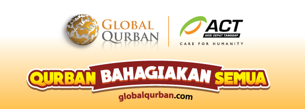
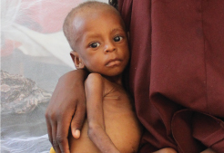
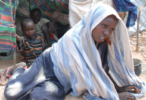
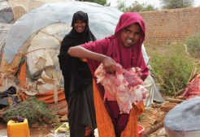
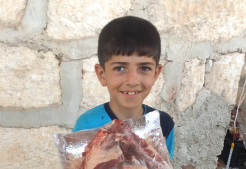
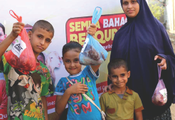
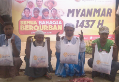
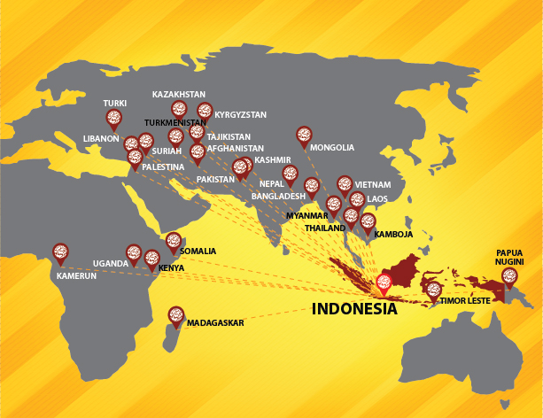
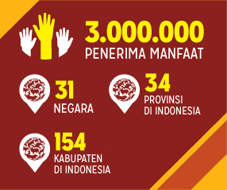

|  | |
| Sahabat, tentu kita pernah merasa lapar, bergegas mengambil dan memilih hidangan yang kita suka, demi terpenuhinya asupan kebutuhan makan untuk tubuh kita. Namun di belahan bumi lainnya, ada jutaan saudara kita yang harus meregang nyawa karena kelaparan. |
|
|  |  |
| Melalui Global Qurban, sahabat dapat berbagi manfaat dalam bentuk daging qurban. Ibadah yang penuh makna dan tepat sasaran ; berempati dengan mereka yang tengah dirudung duka karena krisis rawan pangan, bencana alam, serta konflik kemanusiaan.
|
|
SOMALIA |
SURIAH |
PALESTINA |
MYANMAR |
|  | |
|  | Total 919 ekor sapi, 385 ekor kambing dan 5 ekor unta menjadi persembahan Sahabat Global Qurban untuk 235 Desa/Kelurahan, 165 Kecamatan, 154 Kota/Kabupaten di Indonesia dan 30 negara lain di Benua Asia dan Afrika yang menjadi titik distribusi Global Qurban pada 2016 silam. Hidangan istimewa itu begitu disyukuri oleh saudara-saudara kita yang belum pernah atau jarang bisa menikmati lezatnya daging qurban. Kunjungi : www.globalqurban.com |